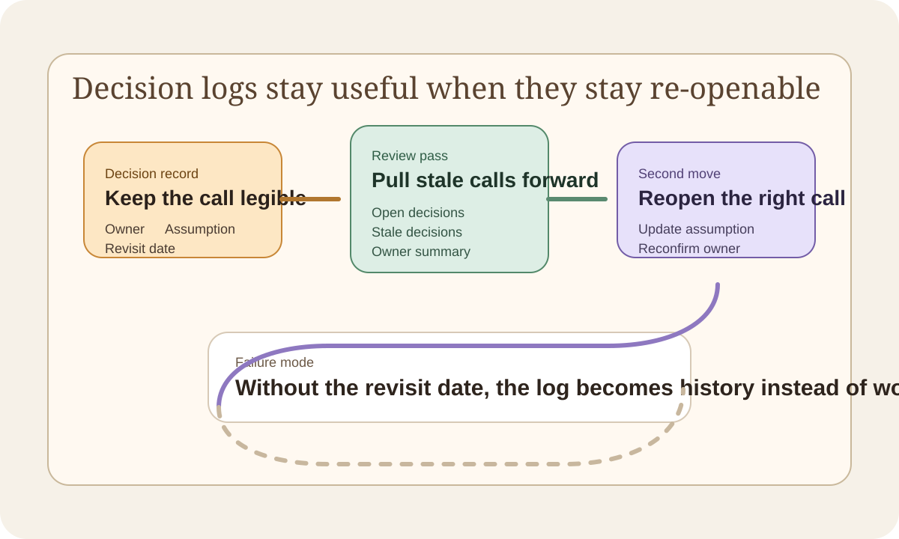

Decision Logs Should Keep the Revisit Date Visible
A decision log stays useful when it keeps the owner, assumption, and revisit date visible enough to pull old calls back into the workflow before they turn into archaeology.
A decision log is weak if it only records that the decision happened. That captures history. It does not help much with the next review.
What I keep wanting is a log that answers three follow-up questions fast:
- who owns the call now
- what assumption it depended on
- when it should come back up again
That is the difference between a useful operating artifact and a graveyard of old conclusions.
The revisit date keeps the log alive
Old decisions usually go stale quietly. The market shifts. The constraint changes. The workaround that made sense six months ago is now just habit.
If the revisit point never stays visible, the team has to rediscover all of that by accident later. That is why I like small tools such as decision-journal-cli. They do not try to replace planning. They keep the reopen signal visible enough that the decision can come back into the workflow before the archaeology phase begins.

The first useful output is a shortlist, not a database
I do not need a decision tool to become another system of record. The first useful output is smaller than that. I want a short view of:
- open decisions
- stale decisions that should be revisited
- which owner is carrying the unresolved calls
That is already enough to make the next move clearer. If the tool gives me one compact stale list before a planning review, it has probably done the right job.
Small planning tools should protect the second move
This is the same pattern I keep liking in other small public repos. The first run should not end at the demo. It should leave behind one artifact that helps with the second move:
- a one-page canvas that can travel
- a dependency report that exposes blocked work
- a decision log that tells you what must be reopened
That is the version of a planning tool that compounds. It does not only organize the past. It makes the next review harder to dodge.
The bar I keep using
If a decision log helps somebody answer "what call should we reopen first" before the review meeting starts, it is already useful. That is the job. Everything else is secondary.